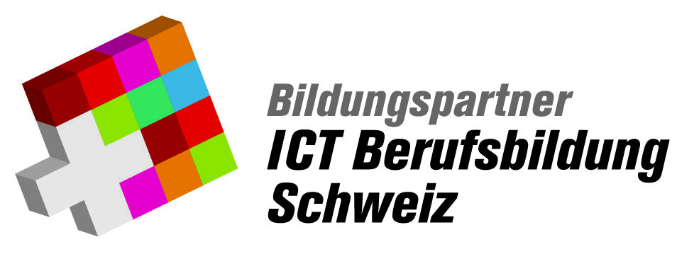
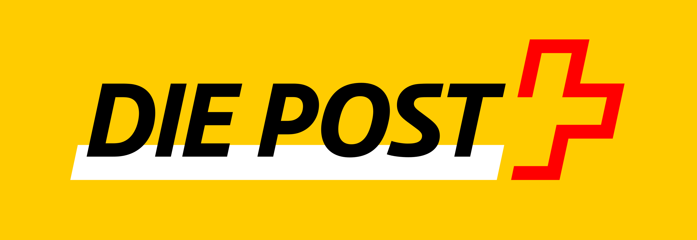
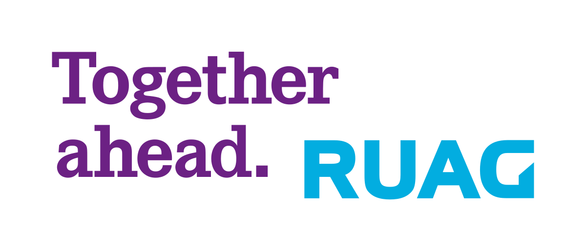

Über BerufsBuddy
Über BerufsBuddy
BerufsBuddy ist dein ständiger Berufsberater, kompakt in deiner Hosentasche. Er erleichtert dir nicht nur deine Berufswahl, sondern hilft dir auch, deinen Traumberuf zu finden. Ganz ohne durchsehen vieler Ordner, kannst du jederzeit und überall mit kurzen Videos neue Berufe erkunden. Wie BerufsBuddy entstanden ist, wer dahinter steckt und was uns wichtig ist, erfährst du hier.
Das BerufsBuddy Team
Wir sind ein junges und dynamisches, vierköpfiges Team und tun alles dafür den BerufsBuddy an die sich ständig ändernden Bedürfnisse der Zielgruppe anzupassen, damit deine Berufswahl zum spielerischen Erfolgserlebnis wird. Unsere Gründungsmitglieder sind genau so vielfältig wie die Lehrberufe, die du auf BerufsBuddy entdecken kannst.

Corina Engel
Die gelernte Mediamatikerin mit der Leidenschaft für Arbeiten rund um und mit der Kamera. Privat steht sie hinter dem Tisch und am Ball beim Bierpong und spielt mit dem Gedanken, einen Verein zu gründen.
Auch bei BerufsBuddy steht Corina als Videografin hinter der Kamera und erzählt Geschichten in bewegten Bildern.
Traumberuf: Tierärztin

Wanaka Emmenegger
Arbeitet als Mediamatikerin zwischen Laufschuhen und Menschenmengen, in der schönsten Stadt der Schweiz. Besitzt mehr Marathon-Medaillen und Finisher-Shirts als die meisten Leute, ohne je an der Startlinie gestanden zu haben.
Als kreativer Kopf textet Wanaka zielgruppengerechte Kampagnen und betreut unsere Social Media Kanäle.
Traumberuf: Tierärztin.

Pascal Linder
Stellte während seiner Ausbildung zum Fotofachmann kurz vor den Abschlussprüfungen fest, dass er eine Rot-Grün-Sehschwäche hat. Dann ging er zur Zeitung, heute arbeitet er beim Radio.
Pascals Stärken liegen also in der Kommunikation. Deshalb ist er bei Berufsbuddy der Spezialist für Kommunikation.
Traumberuf: Lokführer

Florian Pfister
Hauptsache vielfältig, Hauptsache Geschichten erzählen, egal ob Artikel, Film oder Song. Der beste Quizmaster - gleich nach Bob Barker.
Bei BerufsBuddy ist Florian mit seinen Codes als Programmierer das technische Genie hinter unserer Website und der App.
Traumberuf: Polizist, Lehrer oder Schriftsteller
Die BerufsBuddy Werte
Wir sind ein junges und dynamisches, vierköpfiges Team und tun alles dafür den BerufsBuddy an die sich ständig ändernden Bedürfnisse der Zielgruppe anzupassen, damit deine Berufswahl zum spielerischen Erfolgserlebnis wird. Unsere Gründungsmitglieder sind genau so vielfältig wie die Lehrberufe, die du auf BerufsBuddy entdecken kannst.

Leidenschaftlich
BerufsBuddy setzt sich passioniert für die Zukunft von Jugendlichen ein.

Innovativ
BerufsBuddy findet ständig neue, kreative und effektive Wege, um die Berufswahl zu erleichtern.

Individuell
BerufsBuddy setzt auf die Persönlichkeit der einzelnen User und findet treffsichere Lösungen.
So entstand BerufsBuddy
Wer kennt es nicht: Nach dem Besuch im BIZ nur verwirrter zu sein als zuvor und vor lauter Bäumen den Wald nicht mehr zu sehen. Uns ist es genau gleich ergangen! Das stellten wir fest, als wir uns an einem verregneten Montag im September zu viert im Rahmen unseres Studiengangs Multimedia Production zu einem Kennenlerngespräch trafen. Im Gespräch erinnerten wir uns an unseren persönlichen Berufswahlprozess. Schnell sind wir uns einig, dass die Berufswahl ein steiniger Weg war. Getroffen und gefunden: Die gemeinsamen Probleme aus der Jugendzeit spornen uns an, eine Lösung zu entwickeln. BerufsBuddy ist geboren, die Vision, den Berufswahlprozess endlich zu vereinfachen, ist entstanden.
Lerne uns in diesem Video noch besser kennen!
Die BerufsBuddy Vision
Unser Ziel ist es, dir eine Applikation zu bieten, die dir hilft, deine Leidenschaften zu entdecken, deine Fähigkeiten zu entwickeln und den Beruf zu finden, der deine Träume erfüllt. Wir wollen eine Welt schaffen, in der die Arbeit nicht nur ein Mittel zum Lebensunterhalt ist, sondern eine Quelle der Erfüllung und Freude. Damit sagen wir zudem der hohen Lehrabbruchquote den Kampf an! Denn wir haben unseren Traumberuf mit etwas Anstrengung bereits gefunden. Unser Anspruch ist es, dass auch du mühelos und spielerisch deinen Traumberuf findest, damit auch dir die Lehrzeit in der Berufsschule und im Lehrbetrieb easy wird. Unsere Vision ist daher simpel:
Wir begleiten die Jugendlichen von heute auf ihrem Weg zu glücklichen und zufriedenen Fachkräften von morgen. So reduzieren wir langfristig die Schweizer Lehrabbruchquote, indem Jugendliche durch Einfachheit und Spass ihren Traum-Lehrberuf finden.
BerufsBuddy und Freunde
Um dir die bestmögliche Berufswahlerfahrung zu bieten, haben wir uns bereits mit zahlreichen Partnern aus den unterschiedlichsten Branchen zusammengeschlossen. Hier siehst du, mit wem wir bereits erfolgreich zusammenarbeiten. Weitere Kooperationen folgen.


